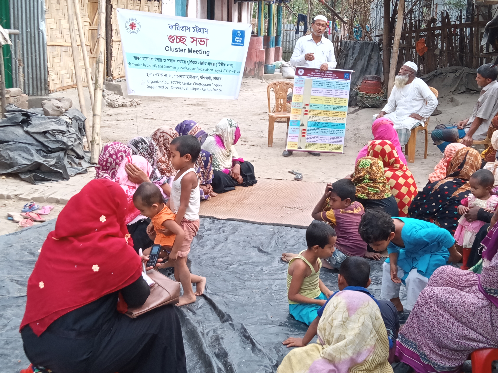

To capacitate the families, communities and local level DMCs to manage the DRR actions following the government regulative framework such as SoD and Disaster Management Act, To sensitize and capacitate the families and communities on preparedness, response and recovery of cyclones and other disasters in Chanua union under Banshkhali upazila in Chattogram district, CB has implemented first phase of Family and Community Level Cyclone Preparedness Project (FCCPP-I). The project started on 1 April 2016 and will be ended on 31 May 2019. Secours Catholique-Caritas France funded the project.
With learning of first phase CB has implemented 2nd phase of Family and Community Level Cyclone Preparedness Project (FCCPP-II) at 52 villages of Nishanbaria union of Taltoli upazila under Barguna district, Chanua and Gondamara union of Banshkhali upazila under Chattogram district and Munsigonj union Shyamnagar upazila under Satkhira district. The second phase of FCCP project, phase II (PI190024) has ended on 30 April 2022 which was started on 1 May 2019.
CB is aiming to continue the endeavor of building disaster resilient communities at new areas under Caritas Barishal, Chattogram and Khulna Regions. Responsible teams of Central Disaster Management Sector and Regional (Barishal, Chattogram and Khulna) DM teams have analyzed problems of vulnerable communities and identified communities’ needs, priorities and recommendations of DRR measures for their resilience.
Background Of The Project
